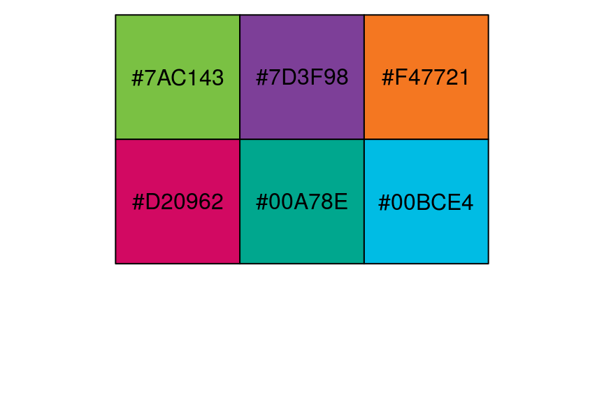
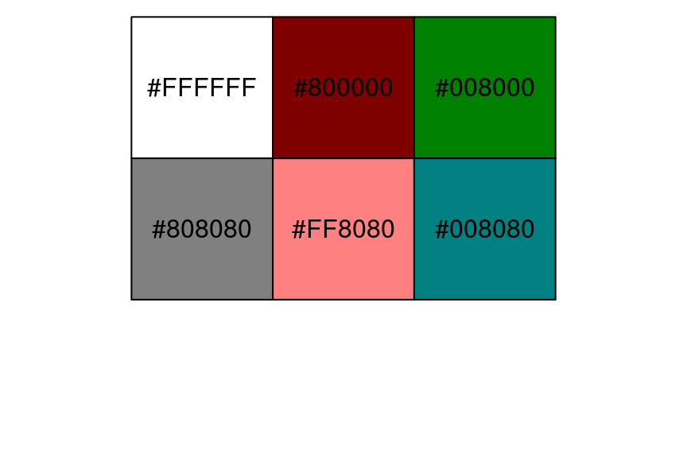

2017-05-20 16:29:04
目录
可视化流程
什么? 为什么?
数据可视化(Data Visualization): 将抽象的科学或者商业数据用图像表示出来，帮助理解数据的意义的过程。可视化并不独立于分析过程，两者往往相伴、迭代推进。
为什么要做可视化? 图形传达信息的效率更高
- 理解数据特性
- 找出数据中蕴含的模式 (pattern)
- 建议建模策略
- 诊断分析中的问题
一般流程

作图前考虑
- 选择绘图设备 (本教程只考虑屏幕设备)
- 是不是只要看看效果？只要显示到屏幕？
- 要输出为文件？是否要高清晰度？用于浏览器/展示/打印？
- 选择绘图系统
- 探索性画一下图？要做面板图？要出更灵活、更美观的图？
- 一般各种绘图系统彼此独立，不能混用。
- 选择统计图种类
- 图表设计
- 是否要分面？如何排版？边距？视觉通道（长短、大小、饱和度、色调、透明度）？
{kind=link}
变量映射
变量映射(数据==>可视化结果)的过程就是视觉编码(visual encoding)。
作图前的数据准备: 各个变量分别映射到哪个视觉通道(visual channel)上？通常，
x变量映射到x轴或角度y变量映射到y轴或半径- 若干
group变量映射到分组- 可以映射为气泡大小、线条粗细
- 可以映射为色调 (hue)
- 可以映射为饱和度 (saturation)
- 可以映射为透明度 (transparency/alpha)
- …
何谓视觉通道?
- 信息被编码在数据-符号的映射关系（视觉编码）中
- 人类视觉系统通过解码视觉编码获得信息
Jacques Bertin, Semiology of Graphics, 1967

- 通道1: 位置
- 通道2: 颜色
- 通道3: 气泡大小

- 通道1: 长度
- 通道2: 颜色
- 通道3: 透明度
人类视觉对不同视觉通道的敏感性
| 通道 | 分类数据 Categorical | 有序数据 Ordinal | 定量数据 Quantitative |
|---|---|---|---|
| 位置 position | |||
| 长度 length | |||
| 亮暗 luminance | |||
| 纹理 texture | |||
| 颜色 color | |||
| 角度 angle | |||
| 形状 shape |
(Jacques Bertin, 1967)
视觉编码的选择优先级
| 序号 | 分类数据 | 有序数据 | 定量数据 |
|---|---|---|---|
| 1 | |||
| 2 | |||
| 3 | |||
| 4 | |||
| 5 | |||
| 6 | |||
| 7 |
视觉编码的选择优先级 (续)
| 序号 | 分类数据 | 有序数据 | 定量数据 |
|---|---|---|---|
| 8 | |||
| 9 | |||
| 10 | |||
| 11 | |||
| 12 | |||
| 13 |
by Mackinlay, Automating the Design of Graphical Presentations of Relational Information, 1986
其他考虑
- 视觉编码方案组合众多: k个视觉通道 * n个数据维度 -> (n+1)^k 种编码方案
- 除了视觉通道以外，还要考虑
- 色彩搭配
- 人机交互
- 美学规律
- 信息密度
- 象征、隐喻
- …
设计原则
基本原则
- 一致性: 可视化结果与数据真实蕴含的信息一致 (诚实性)
- 文字标示清晰、完整
- 视觉度量和数字本身成比例
- 体现数字的变异，而不是设计的变异
- 表达性: 可视化结果充分且不多余地表达数据要传达的信息
- 用于表现数字变化的笔墨比重越高越好
- 内容为王，避免图标垃圾，增加信息/数字密度
- 信息分层
- 对比、证据综合
- 有效性: 可视化之后表达效果更好
- 可理解性: 可视化结果便于理解
by Mackinlay, Tversky, & E. Tufte
一致性
文字标示清晰完整

- 变量名意义不明晰
- 没有标题和背景提示

- 要提供标签、尺度、来源等信息
一致性
视觉度量和数字成比例

- 视觉上7倍 (实际1.07倍)
- 谎言系数: 7/1.07=6.5，夸大5.5倍

一致性
重点表达数字本身的变异

- 彩虹色一般都要慎用
- 要善用灰色、灰度

表达性
提高数字笔墨比 (data-ink ratio)

- 3D图侧面/阴影元素费墨，且误导比例
- 花哨的"镀金"元素，应一律去除

- 淡化边框、网格、轴线、背景
- 去掉所有无关元素
表达性
信息分层

- 分组和颜色太多，降低效果
- 信息密度不要太低也不要太高

表达性
比较、证据综合

- 孤点，信息密度太低
- 没有参比标杆，没有自身对比

- 展示多种变量，展示对比和变化
- 努力表现因果、机制、解释、系统结构等
有效性
选择达意效果最优的图

- 人类视觉对面积不如长度敏感
- 饼图承载信息量太稀，建议尽量少用

调色
颜色编码
| 颜色系统 | 黑 | 灰 | 天蓝 | 番茄 | |
|---|---|---|---|---|---|
| 色名 | 文本, 颜色名字 | "black" | "gray" | "skyblue" | "tomato" |
| RGB空间 | 向量, rgb(Red, Green, Blue, <Alpha>) |
rgb(0, 0, 0) | rgb(190, 190, 190, max=255) | rgb(135, 206, 235, max=255) | rgb(255, 99, 71, max=255) |
| HCL空间 | Hex文本, "#Hue Chroma Luminance <Transparency>" |
#000000FF | #BEBEBEFF | #86CEEBFF | #FF6347FF |
| HSV空间 | 向量, hsv(Hue, Saturation, Value, <Tranparency>) |
hsv(0, 0, 0) | hsv(0, 0, 0.74510) | hsv(0.548, 0.426, 0.922) | hsv(0.025, 0.722, 1) |

色彩空间相互转换
colorspace包，或
- 色名 –> HCL
> col2hcl("pink")
[1] "#FFC0CBFF"
- 色名/HCL –> RGB:
col2rgb
> col2rgb("pink")
[,1]
red 255
green 192
blue 203
- RGB –> HSV:
rgb2hsv
> rgb2hsv(255, 190, 77, max=255)
[,1]
h 0.1058052
s 0.6980392
v 1.0000000标准色
- 标准色内建于
grDevices包中- R内建657种颜色名:
colors() demo(colors)展示内建颜色各种效果

- R内建657种颜色名:
自定义色
- 函数
rgb: R, G, B, A均可0-1或0-255hsv: H, S, V, A均可0-1或0-255
- 或直接书写
hcl颜色编码
library(scales)
show_col(c("#7AC143", "#7D3F98", "#F47721",
"#D20962", "#00A78E", "#00BCE4"))

show_col(c(rgb(1, 1, 1), rgb(0.5, 0, 0),
rgb(0, 0.5, 0), hsv(0, 0, 0.5),
hsv(1, 0.5, 1), hsv(0.5, 1, 0.5)))

调色板 Palette
- 调色板: 多个颜色构成的向量
- 离散色板: 显式定义固定长度调色板，及各组成元素
- 连续色板: 在一根定限的色阶上连续变化的一组颜色
grDevices包中的gray()
> gray(c(0.1, 0.5, 0.8)) # 取灰度0.1, 0.5, 0.8 [1] "#1A1A1A" "#808080" "#CCCCCC" # 返回hcl值
colorRamp()和colorRampPalette(): 生成色阶定义函数
> pal <- colorRamp(c("red", "green", "violet")) # 定义色阶 > pal(c(0.4, 0.75)) # 在该色阶上取0.4, 0.75分位 [,1] [,2] [,3] # 三列分别代表红、绿、蓝 [1,] 51 204.0 0 # 两行分别代表0.4和0.75分位 [2,] 119 192.5 119 > pal <- colorRampPalette(c("red", "green", "violet")) # 定义同样的色阶 > pal(5) # 自动从色阶中等距取5种颜色，返回hcl值 [1] "#FF0000" "#7F7F00" "#00FF00" "#77C077" "#EE82EE"
内置调色板 RColorBrewer包
display.brewer.all()
brewer.pal.info
RColorBrewer
library(RColorBrewer) cols <- brewer.pal(n=3, name="RdYlGn") cols
## [1] "#FC8D59" "#FFFFBF" "#91CF60"
scales::show_col(cols)

pal <- colorRampPalette(cols) image(volcano, col = pal(20))

Thank you!